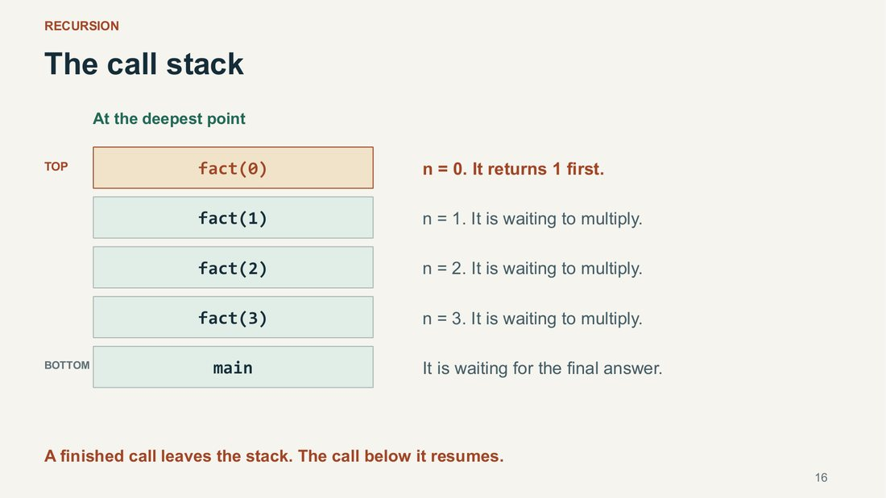
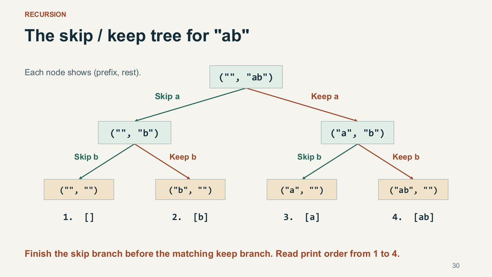
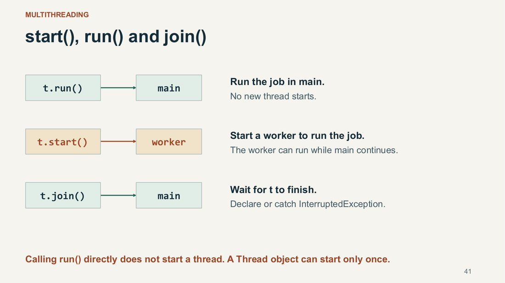

SOE102 · 第 10 章
递归与多线程
Recursion & Multithreading
虚线下划线为术语；悬停查看中文、英文与释义，完整词典见“术语”。
本章目录
本讲分两部分：先用书堆、factorial 与子序列说明递归的四个组成部分、调用栈与回代顺序；再说明如何用 Thread 或 Runnable 启动独立任务，用 start/run/join 区分“开线程”与“普通调用”，并看清共享数据被交错执行时的竞争。
本章要点
- 递归方法由四部分组成：方法契约、base case、递归步、合并；更小的输入必须朝 base case 移动。
- fact(n) = n × fact(n − 1)、fact(0) = 1；每一层有自己的 n，回代时逐层乘回去。
- 调用栈后进先出：最后开始的调用最先返回，下去的待办与回来的顺序相反。
- 递归调用之后的语句要等那一层返回才执行，所以 in 自上而下、out 自下而上。
- base case 必须可达；输入远离停止条件时栈会一直长，直到 StackOverflowError。
- 子序列对每个字母 skip / keep 二选一，helper 带 prefix 与 rest，rest 为空即打印。
- 递归树每层分两支，n 个字母有 2ⁿ 条路径；同一子问题被多条路径到达时会被重复计算。
- Thread 与 Runnable 是两种写法；start() 才开线程，run() 只是普通调用，join() 让 main 等。
- count++ 是读、算、写三步，两个线程交错执行会丢掉一次自增。
10.1 递归：一摞书与四个组成部分
讲义用一个生活问题开场：这摞书有多少本？不必一次数完，只做三步——拿走最上面一本，问“剩下的还有几本”，再把这一本加回去。空stack 是 0 本；非空就是 1 加上下面那摞的数量。
这就是递归recursion：方法在解决一个更小的问题时调用自己。讲义把它拆成四部分，缺任何一块都不成立：
| 部分 | 做什么 | 书堆里的样子 |
|---|---|---|
| 方法契约 | 说明一次调用承诺什么 | 返回剩下的书的数量 |
| base case | 不再调用自己就给出答案 | 空stack 返回 0 |
| 递归步 | 用更小的输入调用自己 | 数去掉最上面一本之后的那摞 |
| 合并 | 用小答案完成本层的答案 | 给最上面一本加 1 |
四部分里最容易被跳过的是最后那句硬要求：The smaller input must move toward a base case。递归步必须让输入真的变小、真的靠近停止条件；否则前三条写得再漂亮，调用也会无限加深。
理解这四个部分之后，“写递归”就变成一个固定的自问顺序：这个方法返回什么？哪一种输入可以不调用自己就回答？我把它交给哪个更小的输入？拿到小答案之后，本层要做什么运算？讲义后面每个例子——factorial、糖果、子序列——都是这一套问答的重复。
W12 p.8–9
10.2 factorial：一条规则与它的 Java 写法
讲义用排座位解释阶乘：4 个人 4 个座位，第一个座位有 4 种选择，接着是 3、2、1，所以 4! = 4 × 3 × 2 × 1 = 24；5 个座位先选谁坐第一个，再安排剩下的四个，于是 5! = 5 × 4! = 120。
由此得到两条规则，正好对应递归的两半：fact(0) = 1（一个人都不安排，只有一种方式，这是 base case）；fact(n) = n × fact(n − 1)（先选第一个人，再安排其余的人，这是递归步加合并）。讲义注明这条数学规则只适用于非负整数。
static long fact(int n) {
if (n < 0 || n > 20) {
throw new IllegalArgumentException("Use 0 to 20");
}
if (n == 0) {
return 1;
}
return n * fact(n - 1);
}三个细节值得单独记。第一，上界 20 来自 long 的容量：20! 装得下，21! 装不下，所以方法先用 IllegalArgumentException 把 0 到 20 之外的值挡在递归之前。第二，n == 0 是唯一的 base case，直接返回 1，不再调用。第三，最后一行同时完成递归步与合并：先取到 fact(n - 1) 的答案，再乘本层的 n。
返回类型是 long：讲义注明 20! 装得下、21! 装不下，这正是方法要把输入限制在 0 到 20 的原因。
W12 p.10–12
10.3 调用栈：先下去，再回来
fact(3) 的执行分两段。下去时每一层都在等：fact(3) 等 fact(2) 的答案好乘 3，fact(2) 等 fact(1) 好乘 2，fact(1) 等 fact(0) 好乘 1，fact(0) 不需要再等，直接返回 1。
回来时顺序相反：fact(1) 拿到 1，算出 1 × 1 = 1；fact(2) 拿到 1，算出 2 × 1 = 2；fact(3) 拿到 2，算出 3 × 2 = 6。讲义把这两段画成左右两列：左边“calls go deeper”，右边“answers come back”，中间那句总结是 the last call to start is the first call to return。
支撑这一切的是调用栈call stack。讲义画了最深处的栈：从顶到底依次是 fact(0)、fact(1)、fact(2)、fact(3)、main。每一帧都有自己的 n，所以三个 n 同时存在、互不覆盖；一个调用结束就离开栈，下面那一层接着算。
| 栈帧 | 此刻的状态 |
|---|---|
| fact(0) | n = 0，第一个返回，值是 1 |
| fact(1) | n = 1，等着做乘法 |
| fact(2) | n = 2，等着做乘法 |
| fact(3) | n = 3，等着做乘法 |
| main | 等着最终答案 |
“后进先出”是这一节的全部内容：最后压入的 fact(0) 最先弹出，最先压入的 fact(3) 最后完成。追踪递归题时，画一张这样的栈表，把每层“待办”写在旁边（这里是要乘的 n），就不会把 6 直接写出来而漏掉中间过程。

W12 p.13–15
10.4 调用前后的打印：in 自上而下，out 自下而上
讲义用一个只负责打印的 show 方法，检验“递归调用之后的代码什么时候执行”：
static void show(int n) {
if (n == 0) return;
System.out.println("in " + n);
show(n - 1);
System.out.println("out " + n);
}show(2) 的输出是 in 2、in 1、out 1、out 2。原因只有一条：递归调用之前的语句在“下去”时执行，递归调用之后的语句要等那一层返回才执行。show(2) 打完 in 2 就卡在 show(1)；show(1) 打完 in 1 卡在 show(0)；show(0) 是 base case，直接 return，什么都不打；然后 show(1) 才轮到 out 1，show(2) 才轮到 out 2。
把这段执行分三段看最清楚：下去段自上而下打印 in 2、in 1；到底段在 base case 处什么都不打印；回来段自下而上打印 out 1、out 2。两段的顺序正好相反，中间被 base case 隔开。
这条规则也解释了 10.3 的乘法为什么能算对：return n * fact(n - 1) 里的乘法发生在调用返回之后，所以每个 n 都在自己那一层等着，直到更小的答案送到手里才动。
W12 p.16–17
10.5 停不下来的递归：base case 必须可达
base case 写错有两种：根本没写；或者写了，但输入永远走不到它。讲义用 broken 演示第二种：
static int broken(int n) {
if (n == 1000) return 1;
return n * broken(n - 1);
}
// In main:
broken(10);调用 broken(10)，n 依次变成 10、9、8、7……离 1000 越来越远。每次调用都继续加深，栈一直长，直到 StackOverflowError。讲义要求检查两件事：停止条件写对了吗？每个新输入确实在靠近它吗？
这也是递归与循环的第一层区别。讲义用一张表对照 factorial 的两种写法：递归版每层收到 n−1，循环版更新一个累乘变量；递归在 n == 0 停，循环在 i > n 停；两者的算术量都是 O(n)，但递归要 O(n) 的调用栈空间，循环只要 O(1)。
| 问题 | 递归版 | 循环版 |
|---|---|---|
| 什么在变 | 每次调用收到 n − 1 | 一个累乘变量被更新 |
| 何时停 | n == 0 | i > n |
| 工作量 | O(n) 次调用 | O(n) 次迭代 |
| 额外的栈空间 | O(n) | O(1) |
结论不是“递归更差”，而是“递归的代价记在栈上”：层数深、或每层还要保存局部变量时，栈空间才是限制；同样的计算用循环写，额外空间是常数。factorial 这种每层只做一次乘法的场景，两种写法算术量相近，差别就在这 O(n) 与 O(1)。
W12 p.18–19
10.6 子序列：每个字母 skip 或 keep
子序列是递归的第二个例子。讲义先给定义：子序列subsequence保留原来的字母顺序，可以跳过一些字母；子串substring必须连续。从 "abc" 出发，"ac" 是子序列（跳过 b），"abc" 是（三个都要），空串也是（三个都跳），"ca" 不是（原文里 a 排在 c 前面）。
递归的看法很简单：对第一个字母只有两个选择。跳过 a，答案就是 "bc" 的全部子序列；保留 a，就把 a 放在 "bc" 每个子序列的前面。两个分支的剩余字母都少一个，所以一定会收敛到空串。
helper 带两个参数：prefix 是已经保留的字母，rest 是还没决定的字母。初始调用是 prefix 为空串、rest 是整个单词；base case 是 rest 为空——没有字母可决定了，打印 [prefix] 并返回。方括号是为了让空结果也能在屏幕上看见。
static void printSubsequences(String prefix, String rest) {
if (rest.isEmpty()) {
System.out.println("[" + prefix + "]");
return;
}
char first = rest.charAt(0);
String remaining = rest.substring(1);
printSubsequences(prefix, remaining); // skip
printSubsequences(prefix + first, remaining); // keep
}四行是核心：取首字母、取剩余串、先 skip 再 keep。顺序决定输出顺序——先递归 skip 分支，所以所有“不要 a”的结果先打印完，才开始“要 a”的分支。两个分支传下去的 remaining 相同，差别只在 prefix 有没有加上 first。
对外只暴露一个入口 subsequences(word)，它把空 prefix 补上再调用 helper。讲义把这个结构叫 wrapper + helper：调用者只需要给单词，递归的细节藏在私有方法里；helper 也可以被声明为 private。

W12 p.24–28、30
10.7 递归树：打印顺序与 2ⁿ 条路径
把 "ab" 的两个选择画成树，每个节点写 (prefix, rest)：根是 ("", "ab")；skip a 得到 ("", "b")，keep a 得到 ("a", "b")；再各自分两支，四个叶子依次是 ("", "")、("b", "")、("a", "")、("ab", "")，对应打印 []、[b]、[a]、[ab]。
打印顺序的规则是“一个分支彻底做完，才轮到它的兄弟”：skip 分支的整棵子树打完，才开始 keep 分支。所以读输出要按“先左子树、再右子树”的顺序走。讲义把这条写成一句操作提示：Finish the skip branch before the matching keep branch。
"abc" 的八个结果是：[]、[c]、[b]、[bc]、[a]、[ac]、[ab]、[abc]。前四个来自“跳过 a”，后四个来自“保留 a”；每个四组内部又是“跳过 b”在前、“保留 b”在后。讲义用两列表格呈现：先读左列（skip a 的四个），再读右列（keep a 的四个）。
数量增长是指数级的：每个字母二选一，n 个字母就是 2 的 n 次方个叶子。讲义给了三个数据点：3 个字母 8 条路径，10 个字母 1024 条，20 个字母 1,048,576 条。
| 字母数 | 路径数 |
|---|---|
| 3 | 8 |
| 10 | 1,024 |
| 20 | 1,048,576 |
讲义另注一句：重复字母会产生重复的结果——同一棵树仍然走 2ⁿ 条路径，但打印出来的字符串可能相同。这是“路径数”与“不同结果数”的差别。
附录的 fib 是同一现象的另一种表现：fib(n) = fib(n − 1) + fib(n − 2)，两个 base case 是 fib(0) = 0、fib(1) = 1；fib(5) 会两次请求 fib(3)，同一棵子树被反复计算。讲义给的序列是 0、1、1、2、3、5、8。
W12 p.29、31–34、53
10.8 线程：Thread 与 Runnable 两种写法
线程部分从一个厨房开始：一个厨师可以在等汤的时候去拌沙拉（轮流做），两个厨师可以同时一个煮汤一个拌沙拉（同时做）。讲义给了一组定义：轮流是 并发concurrent，同一瞬间同时做是 并行parallel；而共用的炉子需要协调——两个任务都要用，就只能排队。
程序要满足三条：R1 汤和沙拉作为两个独立任务运行，各自打印自己的 worker 名字；R2 main 在 worker 运行期间继续打印，消息顺序可以变化；R3 main 等两个任务都结束，Dinner is ready 永远最后打印。讲义补了一句物理基础：每条线程有自己的调用栈——这正是每个任务能独立推进的原因，也是递归与线程在“栈”上的分野。
写法一，继承 Thread。CookingTask 是一种 Thread，工作写在 run() 里，创建后调 start()：
class CookingTask extends Thread {
private final String task;
CookingTask(String task) {
this.task = task;
}
@Override
public void run() {
System.out.println(task + " by "
+ Thread.currentThread().getName());
}
}
// In main:
new CookingTask("Soup").start();写法二，实现 Runnable。CookingJob 只描述“要做什么”，再把它交给一个 Thread 对象，顺便给线程起名 Cook-A：
class CookingJob implements Runnable {
private final String task;
CookingJob(String task) {
this.task = task;
}
@Override
public void run() {
System.out.println(task + " by "
+ Thread.currentThread().getName());
}
}
// In main:
new Thread(new CookingJob("Soup"), "Cook-A").start();两种写法的区别在职责：继承版里“任务”和“线程”是同一个对象；Runnable 版里作业与线程是两个对象，作业只说明工作内容，线程负责执行。讲义把这一点写成 Separate roles——the job and the thread are different objects。也正因如此，run() 里要问“是谁在跑”，答案来自 Thread.currentThread().getName()，而不是对象自己的字段。
线程的生命周期在附录里给了六个状态：NEW（已创建未启动）、RUNNABLE（可运行或正在运行）、BLOCKED（等监视器锁）、WAITING（无超时等待，例如 join）、TIMED_WAITING（限时等待，例如 sleep）、TERMINATED（已结束）。Java 没有单独的 RUNNING 值；结束的线程不能重启。
W12 p.35–39、54
10.9 start、run、join 与共享数据的竞争
三个方法只差几个字母，行为完全不同：
| 调用 | 在哪个线程执行 | 效果 |
|---|---|---|
t.run() | main | 当成普通方法调用，不开新线程 |
t.start() | 新的 worker | 启动线程，worker 可与 main 并行 |
t.join() | main 等待 | 等 t 结束；要声明或捕获 InterruptedException |
讲义用一段演示把 run 与 start 的差别摆在同一个控制台上：同一个 Thread 对象先 cook.run() 再 cook.start()，第一次打印 Soup by main，第二次打印 Soup by Cook-A。方法体一模一样，变的只是“谁在执行它”。
两个 worker 的输出顺序不确定：a.start(); b.start(); 之后 main 打印 Main continues，这一次可能是 Soup、Main continues、Salad，下一次可能是 Main continues、Salad、Soup。讲义的态度很清楚：A sample run is only one schedule——一次运行只能证明“可能这样”，不能证明“一定这样”。
要保证顺序就得 join。四行代码的顺序是固定的：
a.start();
b.start();
a.join();
b.join();
System.out.println("Dinner is ready");两个 start 都必须在前，否则 join 时线程还没开始；两个 join 都必须在最后一行之前，否则 main 可能先跑完。讲义用时间轴画了这一点：两个 worker 谁先结束都行，但 join 返回意味着那一条线程已经结束，所以两个 join 都返回之后，Dinner is ready 一定在两条 worker 消息之后。
最后是共享数据。count++ 看着是一条语句，实际是三步：读 count、加一、写回。两个 worker 同时做，就可能都读到 0、都算出 1、都写 1，两次自增只剩一次：
| 操作 | Worker A | Worker B |
|---|---|---|
| 读 count = 0 | 读到 0 | 读到 0 |
| 计算新值 | 得到 1 | 得到 1 |
| 写回 | 写入 1 | 写入 1 |
讲义用一句话总结：count++ reads, adds and writes. Another thread can interleave those steps。所以共享的可变数据需要协调，否则最终结果取决于调度顺序——这也回到了厨房里那只共用的炉子：两个任务都要用，就必须排队。

W12 p.40–46